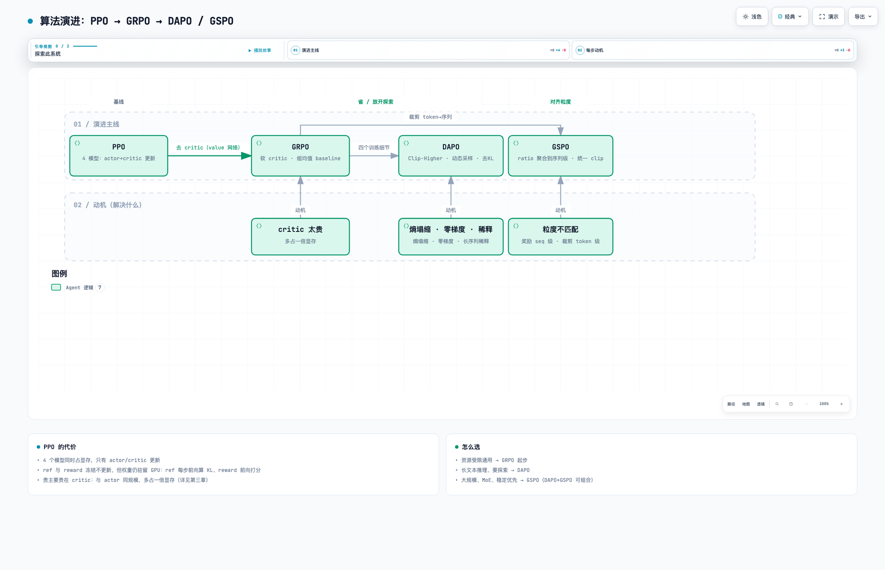
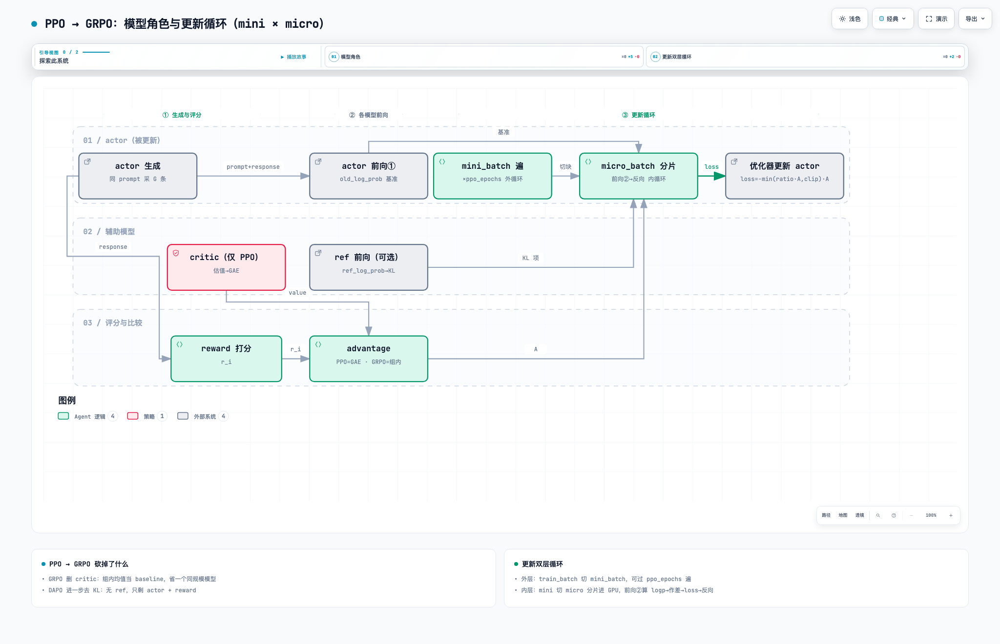
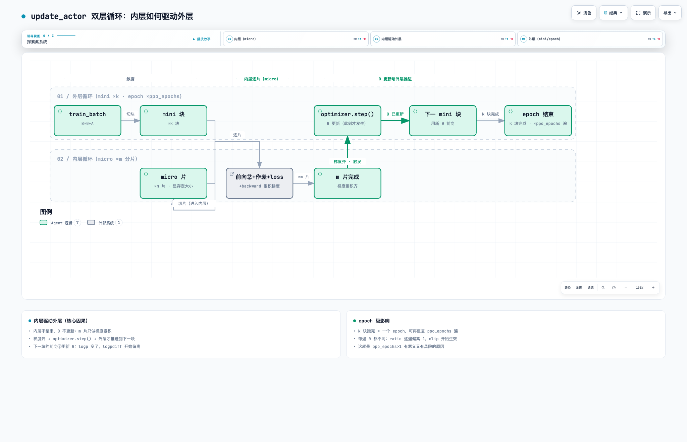

三、算法详解
四个算法的演进关系：
- PPO 是起点：4 个模型协同，更新稳定但显存开销最大；
- GRPO = PPO 砍掉 critic（value 网络）：用组内均值替代价值估计，省一个同规模模型；
- DAPO 改采样与裁剪细节、放开探索——解决熵塌缩、零梯度批次、长序列稀释；
- GSPO 把裁剪从 token 级改到序列级——解决"奖励是序列级、裁剪是 token 级"的粒度不匹配；
- DAPO 与 GSPO 改的是不同部位、互不冲突，可组合使用（DAPO+GSPO）。

交互版：rl-05-算法演进.html
1. 四个算法的演进与核心区别
- PPO：需要 4 个模型。
| 模型 | 作用 | 更新？ |
|---|---|---|
| Actor（策略） | 生成 response | 训练更新 |
| Critic（价值） | 评估状态价值，算优势（GAE） | 训练更新 |
| Reference（参考） | 冻结，算 KL 散度，防策略偏离太远 | 冻结 |
| Reward | 给 response 打分 | 冻结 |
核心流程：Actor 生成样本 → Reward 打分 → Critic 评估价值 → 算优势与 PPO loss（含 KL 约束）→ 更新 Actor 和 Critic。关键：只有 Actor 和 Critic 更新，Reference 与 Reward 冻结，4 个模型同时占显存。贵主要贵在 Critic：与 Actor 同规模，多占一倍显存、多一倍计算。
-
GRPO：砍掉 Critic——同一 prompt 采 G 条 response，
A = (r − mean) / std用组内统计当 baseline（3 个模型）。省一个与 Actor 同规模的模型；代价：组全对/全错时梯度为零。 -
DAPO：GRPO 上放开探索的四个改动（2 个模型：Actor + Reward）：
(a). Clip-Higher：非对称裁剪，上限放宽——核心创新，鼓励高价值 token 探索； (b). 动态采样：重新采样直到组内同时含正确与错误（过滤全对/全错）； (c). 过长奖励塑形：对超长回答惩罚，防截断投机； (d). 去 KL + token 级 loss 平均：去掉 KL 惩罚换探索空间，长序列不被稀释。
💡 长序列稀释是什么：GRPO 原版 loss 按"序列平均"聚合——每条 response 不论长短，对 loss 的权重相同。一条 512 token 的短回答和一条 8192 token 的长回答贡献一样大，但训练信号摊在每个 token 上，长回答中每个 token 分到的信号只有短回答的 1/16——序列越长，单个 token 的错误对 loss 的影响被摊得越薄。长推理任务（数学/代码的推理链动辄几千 token）中模型某一步犯的错因为序列太长，纠正力度不足。DAPO 改为 token 级平均：所有 token 平等计权，长序列不再稀释学习信号。
-
GSPO：解决粒度不匹配——reward/advantage 本来是序列级（一条 response 一个分），此前的裁剪却在 token 级（每个 token 各自 clip，长序列 token 级偏移会累积，序列整体策略可能已偏很远）。GSPO 把序列内 token ratio 平均成序列级 ratio、整条序列统一 clip——优化粒度与奖励粒度对齐。大规模/MoE 训练更稳（Qwen3 采用）。
DAPO 与 GSPO 正交（一个改采样与裁剪细节、一个改聚合粒度），可组合使用。
2. GRPO 详解：模型角色与数据切分
GRPO：同一 prompt 采样 G 条 response，reward 打分后在组内比较算出优势（Advantage），actor 按优势更新（ref 冻结、算 KL 防跑偏），循环。
三个模型角色：
- actor：策略模型，唯一被更新的对象，生成和训练都用它。
- ref（reference）：冻结的初始模型。KL(π_actor‖π_ref) 作约束，防 actor 为刷 reward 偏离初始模型；跑偏表现：格式崩坏、复读、胡言。KL 位置两种：loss 内（
use_kl_loss=True）或 reward 内扣分（kl_in_reward）。 - critic（value 网络/价值模型，同一概念三个叫法）：输入当前状态、输出一个标量——按当前策略走下去预期能拿多少总奖励（V(s)）。PPO 用它当 baseline 算优势（GAE）；GRPO 不用——同一 prompt 采样 G 个回答（
rollout.n = G），advantage = (r_i − mean(G)) / (std(G) + 1e-8)，同组所有 token 共享。同组回答同题共难度，均值即该题基线。省一个与 actor 同规模模型的显存与计算。

batch 的三层切分：
| 层级 | 名字 | 是什么 | 约束 |
|---|---|---|---|
| 1 | train_batch_size |
一步的全局批（prompt 数） | 决定一步数据量与耗时 |
| 2 | ppo_mini_batch_size |
每次更新的数据块，可重复 ppo_epochs 遍 |
必须 ≤ train_batch_size |
| 3 | ppo_micro_batch_size |
块内一次进 GPU 的分片 | 由显存反推，OOM 先减半它 |
数据的计算方式：图 2（第一章）的"评分"与"compute logp"阶段整批计算；"训练"阶段按 mini_batch 切块、每块内按 micro_batch 分片做前向和反向。

update_actor 的双层循环：外层 mini_batch（×k 块、整批可重复 ppo_epochs 遍）→ 内层 micro_batch（显存决定一片多大，逐片"前向②作差 → 算 loss → 反向累积梯度"，块末 optimizer.step() 更新 θ）。同批多遍时 ratio 会逐遍偏离 1、clip 开始生效，这是正常现象。
3. 对比表
| 维度 | PPO | GRPO | DAPO | GSPO |
|---|---|---|---|---|
| ref（冻结·KL） | 要 | 要 | 不要（去 KL） | 要（可选） |
| critic | 要（GAE） | 不要，组内均值 | 不需要 | 不需要 |
| reward | RM 打分 | 打分（组内比较） | verify 对答案 | 打分 |
| 裁剪 | token 级，对称 1±ε | token 级，对称 | token 级，非对称（clip-higher） | 序列级 |
| 采样 | 固定组 | 固定组 | 动态采样（过滤全对全错） | 固定组 |
| loss 聚合 | token 级 | 序列平均 | token 级平均 | 序列级 |
| KL | reward 内 | loss 或 reward | 去掉，改过长惩罚 | 可选 |
| 修的病 | — | value 网贵 | 熵塌缩 / 零梯度 / 长序列稀释 | 长序列 token 裁剪震荡 |
4. 怎么选
- 资源受限、通用任务 → GRPO 起步
- 长推理（数学/代码）、需要探索 → DAPO
- 大规模、MoE、稳定性优先 → GSPO（或 DAPO+GSPO 组合）
- 已有 critic 训练管线的老系统 → PPO
veRL 中的切换：algorithm.adv_estimator（advantage 计算器，core_algos.py 注册了 grpo/dapo 等）+ loss 变体注册（register_policy_loss）。切换通常只是配置项与 loss 名称，不动训练循环。
💡 LoRA、MOPD 等其他算法和训练范式不做赘述